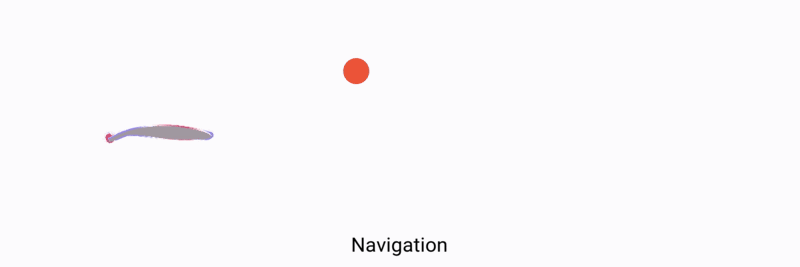

Abstract
Swimming in nature achieves remarkable performance through diverse morphological adaptations and intricate solid-fluid interaction, yet exploring this capability in artificial soft swimmers remains challenging due to the high-dimensional control complexity and the computational cost of resolving hydrodynamic details. Traditional approaches rely on morphology-dependent heuristics—typically handcrafted by human experts through predefined muscle layouts—which constrain the control space to human-biased priors and limit the exploration of novel swimming strategies. Additionally, existing learning frameworks often compromise hydrodynamic fidelity for computational efficiency, eliminating fluid dynamics essential for advanced strategies like vortex exploitation. Inspired by biological swimmers’ ability to achieve complex motion through low-dimensional actuation, we propose an automated framework featuring a unified reduced-mode control space that naturally captures typical deformation patterns observed across diverse swimmers. Our approach requires only sampling to generate controllers for diverse morphologies, minimizing human design effort while balancing kinematic expressiveness and dynamic plausibility. We also develop a GPU-accelerated simulator that efficiently resolves fluid-structure interactions, specifically tailored for learning soft-body swimming controllers. We evaluate our method on various morphologies, demonstrating 50% higher success rates in swimming task than state-of-the-art baselines, which particularly struggle with unconventional forms (e.g. torus) where our method discovers novel, effective swimming strategies. We showcase how our automated approach discovers high-performance swimming patterns similar to those found in nature over years of evolution. Our work unlocks future opportunities in automated co-design of morphology and control of soft robots in complex hydrodynamic environments.
Our Method

We introduce a unified, reduced mode control framework for free-form soft swimmers that automates policy learning across various morphologies. Our approach eliminates human priors while preserving deformation expressiveness.
This is coupled with a high-fidelity, GPU-accelerated simulator that accurately models the critical fluid-structure interactions, enabling efficient RL training while resolving hydrodynamic phenomena critical to swimming.
A Diverse Range of Swimmers
We test our framework on 12 different morphologies, including 6 bio-inspired shapes and 6 abstract shapes with unconventional topologies to demonstrate the generality of our method.

Results
Our method successfully discovers effective and biologically plausible swimming gaits for a wide variety of shapes, significantly outperforming baselines, especially on unconventional morphologies where expert-designed heuristics fail.
For example, our policy learns a novel twisting-and-rotating motion for the torus shape and a rhythmic "dancing" motion for the Enneper surface, both of which generate robust forward propulsion.

For the biomimetic morphologies, our method also discovers effective swimming strategies, comparable to the expert-designed ones (clowngish and jellyfish below).
We also explored the capability of our method on more complex tasks such as navigation and flow resistance:

The energy cost can be easily integrated into current learning pipeline to discover more energy-efficient policices.

More results can be found in our paper and supplementary material.
Citation
If you find our work useful in your research, please consider citing:
@inproceedings{hu2025learning,
title={Learning to Control Free-Form Soft Swimmers},
author={Changyu Hu,Yanke Qu,Qiuan Yang,Xiaoyu Xiong,Kui Wu,Wei Li,Tao Du},
booktitle={Conference on Neural Information Processing Systems (NeurIPS)},
year={2025}
}